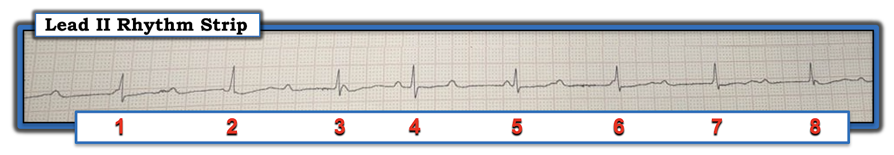
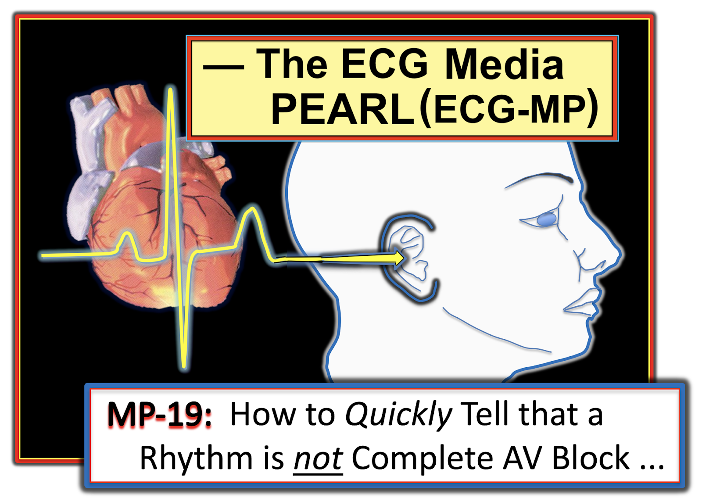
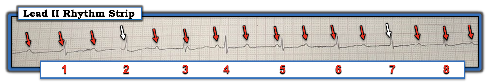
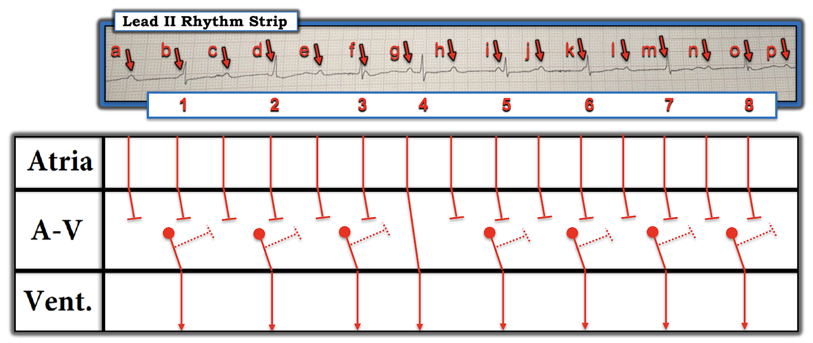

ECG Blog #202 — Có sóng P nào được dẫn truyền không?
Dải nhịp chuyển đạo II dài trong Hình-1 được ghi từ một bệnh nhân lớn tuổi bị ngất. Nhịp này được chẩn đoán là có lẽ blốc AV hoàn toàn.
- BẠN có đồng ý với chẩn đoán blốc AV hoàn toàn (độ 3) không?


Cách tiếp cận CỦA TÔI với nhịp trong Hình-1:
Thật không may — bản ghi bị nghiêng, do đó bị méo nhẹ. Dù vậy — chúng ta vẫn có thể diễn giải bản ghi này một cách thích hợp. Theo cách tiếp cận Ps, Qs & 3R (Xem ECG Blog #185):
- QRS hẹp (ít nhất là ở chuyển đạo theo dõi duy nhất này).
- Khi tính đến việc bản ghi bị nghiêng, làm giấy điện tâm đồ méo nhẹ — nhịp thất nhìn chung có vẻ đều, ngoại trừ nhát #4 xuất hiện sớm hơn dự kiến.
- Sóng P có hiện diện. Dù vậy — khó xác định từ Hình-1 liệu nhịp nhĩ có hay không đều ... Đến đây tôi với lấy compa đo (calipers) của mình.
- LƯU Ý: Trước khi dùng compa đo — tôi đã thấy có vẻ như một số (nếu không nói là nhiều) sóng P trong Hình-1 đã không được dẫn truyền. Vì vậy, ít nhất — có vẻ nhiều khả năng đang có một dạng blốc AV độ 2 nào đó.
=======================================
LƯU Ý: Đến đây, một số độc giả có thể muốn nghe ECG Audio PEARL dài 5 phút trước khi đọc Suy nghĩ của tôi về điện tâm đồ trong Hình-1. Bạn có thể xem Suy nghĩ của tôi về bản ghi này vào bất kỳ lúc nào (nằm bên dưới ECG MP-19).
=======================================


ECG Media PEARL #19a (6:45 phút Audio) hôm nay — Vì sao đây không phải blốc AV hoàn toàn? Bản ghi âm này gợi ý vài việc cần làm nhanh giúp xác định có hay loại trừ blốc AV hoàn toàn (T.B. (P.S.) — Tôi đã cập nhật Audio Pearl này vào ngày 12 tháng 10 năm 2021).
Cách tiếp cận CỦA TÔI với nhịp này (tiếp theo):
Lợi ích của việc dùng compa đo thể hiện ngay lập tức khi xem Hình-2:
- Tôi bắt đầu bằng cách đặt compa đo theo khoảng P-P gợi ý bởi bất kỳ 2 sóng P liên tiếp nào mà tôi có thể chắc chắn (tức là, có thể dùng hoặc các sóng P ngay trước và sau nhát #4 — hoặc — các sóng P ngay trước và sau nhát #5). Làm như vậy giúp tôi tìm được “sóng P đúng lúc” tại tất cả các vị trí được đánh dấu bằng mũi tên ĐỎ.
- Tôi đánh dấu bằng mũi tên TRẮNG trong Hình-2 2 vị trí trên dải nhịp này mà tôi không thấy dấu hiệu rõ ràng của một sóng P bên dưới.
ĐIỂM THEN CHỐT (PEARL) #1: Phần lớn trường hợp khi có blốc AV — nhịp nhĩ sẽ đều (hoặc ít nhất là khá đều nếu có loạn nhịp xoang hay loạn nhịp xoang theo pha thất (ventriculophasic)). Vì vậy, dù chúng ta không thấy dấu hiệu rõ ràng của sóng P xoang dưới các mũi tên TRẮNG — khả năng là rất cao rằng các sóng P đúng lúc đang ẩn trong QRS của nhát #2 và 7.
- Sự biến dạng tinh tế ở khởi đầu phức bộ QRS của nhát #7 ủng hộ giả định của tôi rằng có sóng P đều suốt bản ghi này (và việc biến dạng tinh tế này xuất hiện đúng lúc gần như chắc chắn đánh dấu khởi đầu của một sóng P phần lớn nằm trong QRS của nhát #7).
- Thật không may — tất cả những gì chúng ta có trong case hôm nay là dải nhịp chuyển đạo II duy nhất này. Nhưng theo dõi thêm tại giường và/hoặc xem các chuyển đạo ghi đồng thời trên điện tâm đồ 12 chuyển đạo là 2 cách để xác nhận rằng thực sự có sóng P đều!


CÂU HỎI:
- Đến thời điểm này của case hôm nay — BẠN đã diễn giải nhịp này NHƯ THẾ NÀO?
Suy nghĩ CỦA TÔI (tiếp theo):
Dựa trên các dấu hiệu mô tả ở trên — chúng ta có thể chẩn đoán nhịp trong Hình-2 cho thấy một dạng blốc AV độ 2 nào đó vì: i) Có sóng P xoang đều (nên chúng ta không phải đang đối mặt với PAC hay khoảng ngưng xoang ở một bệnh nhân có hội chứng suy nút xoang); và, ii) Ít nhất một số sóng P này không được dẫn truyền. Ngoài ra — tôi muốn nhấn mạnh những điểm sau:
- QRS hẹp ở mọi nơi — nên vị trí của nhịp thoát thất nằm trong hệ thống dẫn truyền (tức là, hoặc ở nút AV hoặc ở bó His).
- ĐIỂM THEN CHỐT (PEARL) #2: Có phân ly nhĩ thất (AV dissociation) — vì nhiều sóng P có vẻ không được dẫn truyền. Nhưng chúng ta không thể xác lập mức độ nặng có khả năng của blốc AV cho đến khi đánh giá có bao nhiêu sóng P trong số này có cơ hội hợp lý để dẫn truyền, nhưng vẫn không dẫn truyền được!
- ĐIỂM THEN CHỐT (PEARL) #3: Việc nhát #4 xuất hiện sớm hơn dự kiến nhiều trong Hình-2 — gợi ý mạnh rằng sóng P này có được dẫn truyền! Phần lớn trường hợp có blốc AV — nhịp thoát thất sẽ đều (hoặc ít nhất là khá đều). Manh mối TỐT NHẤT mà tôi biết khi đánh giá một nhịp để xác định có dẫn truyền nào hay không, là tìm các nhát xuất hiện sớm hơn dự kiến!
- LƯU Ý: Khác với mọi khoảng PR khác trong bản ghi này — khoảng PR trước nhát #4 (đo được ~0.19 giây) có thời gian mà người ta có thể kỳ vọng sẽ dẫn truyền được. Có sóng P nào khác trên bản ghi này có khoảng PR cho chúng một cơ hội hợp lý để dẫn truyền không?
GIẢN ĐỒ BẬC THANG (LADDERGRAM):
Cách dễ nhất để truyền đạt suy nghĩ của tôi là vẽ một giản đồ bậc thang (Hình-3). Để rõ ràng — tôi đã ghi nhãn tất cả sóng P trong bản ghi này.
- Trước đây tôi đã trình bày cách đọc (và vẽ) giản đồ bậc thang (Xem ECG Blog #191). Như tôi đã nêu trong Pearl #3 — việc nhát #4 xuất hiện sớm hơn dự kiến nhiều gợi ý mạnh rằng sóng P “g” đang được dẫn truyền! Do đó — mức độ blốc AV trong bản ghi này không hoàn toàn!
- Tất cả các phức bộ QRS khác trong bản ghi này có vẻ là nhát thoát bộ nối — vì khoảng R-R đứng trước mỗi nhát này là hằng định (tương ứng với tần số thoát bộ nối thích hợp khoảng ~6 ô lớn = ~50/phút) — và — không sóng P nào khác trong bản ghi này có cơ hội thỏa đáng để dẫn truyền (tức là, các sóng P b, d, f, i, k, m và o đều xuất hiện quá gần QRS — còn các sóng P a, c, e, h, j, l và n đều xuất hiện khá xa QRS kế tiếp).
- ĐIỂM THEN CHỐT (PEARL) #4: Mặc dù tất cả sóng P trong bản ghi này trừ “g” đều không dẫn truyền — không có bằng chứng gợi ý blốc AV “mức độ cao”. Điều này là vì chúng ta không bao giờ thấy 2 sóng P liên tiếp lẽ ra phải dẫn truyền mà lại không dẫn truyền được!
ĐIỀU CỐT LÕI: Tôi sẽ diễn giải bản ghi này là blốc AV độ 2 với mức độ nặng chưa xác định. Có bằng chứng của dẫn truyền AV 2:1 (tức là, cứ mỗi sóng P thứ hai xuất hiện gần giữa khoảng R-R lẽ ra phải dẫn truyền nhưng lại không) — nhưng 1 sóng P có dẫn truyền (tức là, "g") lại dẫn truyền với khoảng PR bình thường. Vì vậy, rất có thể tỷ lệ dẫn truyền không tệ hơn 2:1.
- Đây nhiều khả năng nhất là blốc AV độ 2 loại Mobitz I (Wenckebach AV) — vì phức bộ QRS hẹp, và Mobitz I phổ biến hơn nhiều so với Mobitz II.
- Như đã bàn chi tiết trong ECG Blog #191 — phân ly nhĩ thất không bao giờ là một chẩn đoán, mà luôn phát sinh do “một điều gì khác” (tức là, do “chiếm quyền” (usurpation), “mặc định” (default), hoặc blốc AV). Trong case hôm nay — lý do của phân ly nhĩ thất là blốc AV độ 2.
- Bệnh nhân trong case hôm nay có thể cần hoặc không cần máy tạo nhịp vĩnh viễn. Chúng ta đơn giản là không thể trả lời câu hỏi này chỉ dựa trên dải nhịp ngắn duy nhất này — trong đó tần số tim chung không bao giờ giảm dưới 50/phút, và mức độ blốc AV không hoàn toàn. Cần theo dõi nhịp thêm (và đối chiếu với triệu chứng của bệnh nhân) — để trả lời câu hỏi này.


-------------------------------------------------------------------------
- Lời cảm ơn: Xin cảm ơn Václav Lejsek (từ Prague, Cộng hòa Séc) đã cung cấp case và bản ghi này.
-------------------------------------------------------------------------
==============================
Các bài liên quan trên ECG Blog với case hôm nay:
- ECG Blog #185 — Sử dụng cách tiếp cận hệ thống để đọc nhịp.
- ECG Blog #191 — Blốc AV có hoàn toàn không? (Đánh giá phân ly nhĩ thất).
- ECG Blog #188 — Cách đọc (và vẽ) giản đồ bậc thang.
Các bài khác về đánh giá blốc AV:
— LƯU Ý: Còn nhiều case khác liên quan đến đánh giá blốc AV trên Blog này, nhưng các bài dưới đây cung cấp một số “bài tập” cho những ai đang tìm case ví dụ.
- ECG Blog #164 — Về Mobitz I.
- ECG Blog #187 — Một dạng Wenckebach nào đó.
- ECG Blog #189 — Wenckebach hai tầng.
- ECG Blog #192 — Phân ly nhĩ thất do mặc định (so với chiếm quyền).
- ECG Blog #62 — Blốc AV 2:1: Mobitz I hay II?
- ECG Blog #61 — Blốc AV do cường phế vị (vagotonic).
- ECG Blog #58 — Phân ly nhĩ thất do “mặc định”.
- ECG Blog #66 — Nhịp theo nhóm (group beating) không do Wenckebach.
- ECG Blog #154 — Nhịp theo nhóm kèm nhồi máu cơ tim thành dưới cấp.